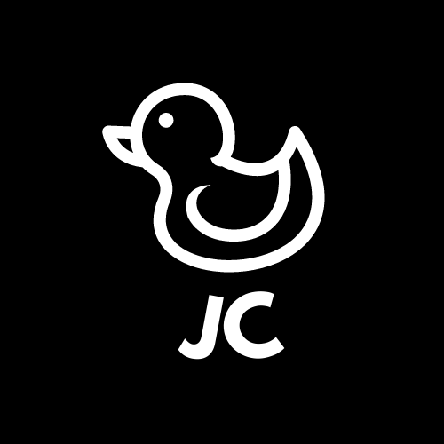

<ion-header>
  <ion-toolbar color='danger'>
    <ion-buttons slot="start" class="menu_btn">
      <ion-menu-button color="light" defaultHref="home1"></ion-menu-button>
    </ion-buttons>
    <ion-title>Negocios</ion-title>
    
  </ion-toolbar>
</ion-header>
<ion-content >
  <ion-list>
    <ion-item style="font-size:12px;">
      <ion-select style="font-size:12px;" placeholder="Seleccionar zona " cancelText="Cancelar" okText="Ok"  [(ngModel)]="buscarporlugar" >
        <ion-select-option value="">Todas las zonas</ion-select-option>
        <ion-select-option *ngFor="let zona of afiliadosservice.zonas | filtrocinco | filtrosiete " value="{{zona.lugar}}">{{zona.lugar}}</ion-select-option>
      </ion-select>
    </ion-item>
  </ion-list>

  <ion-list>
    <ion-item style="font-size:12px;">
      <ion-select style="font-size:12px;" placeholder="Seleccionar categoria" cancelText="Cancelar" okText="Ok" [(ngModel)]="buscarporcategorias" >
        <ion-select-option value="">Todas las categorias</ion-select-option>
        <ion-select-option  *ngFor="let categoria of afiliadosservice.categorias | filtrocuatro | filtroseis" value="{{categoria.categorias}}">{{categoria.categorias}}</ion-select-option>
    
      </ion-select>
    </ion-item>
  </ion-list>


  <ion-card *ngFor="let afi of afiliados | filtro:buscarporlugar | filtrodos:buscarporcategorias | filtrotres">
    
   <ion-card-content>
      <ion-card-title>{{afi.lugar}}</ion-card-title>
      <ion-card-subtitle>{{afi.categoria}}</ion-card-subtitle>
      </ion-card-content>
      <ion-button color="success" expand="full" [routerLink]="['/sucursal',afi.cod]">
        <ion-icon slot="end" name="arrow-forward"></ion-icon>
      </ion-button>
  </ion-card>

</ion-content>